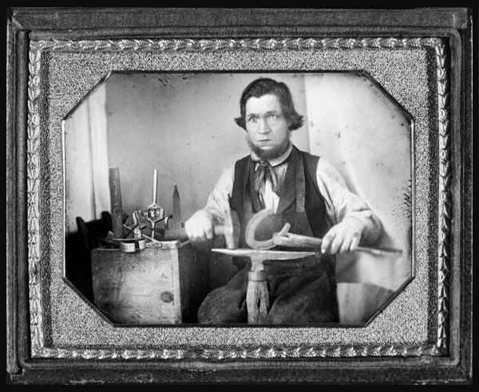
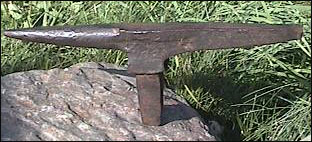

The Blacksmith
|
Occupational portrait of a blacksmith, three-quarter length, working
on a horseshoe at an anvil, other tools to his side. Daguerreotype, ca 1840-1860.
Daguerreotype Collection, Library of Congress Prints and Photographs Division Washington, D.C. 20540 USA.
(Call Number: DAG No. 1198.)
|

|
A Bick Anvil Hardie similar to the anvil used in the Daguerreotype (top image). Photo by David Vose
|